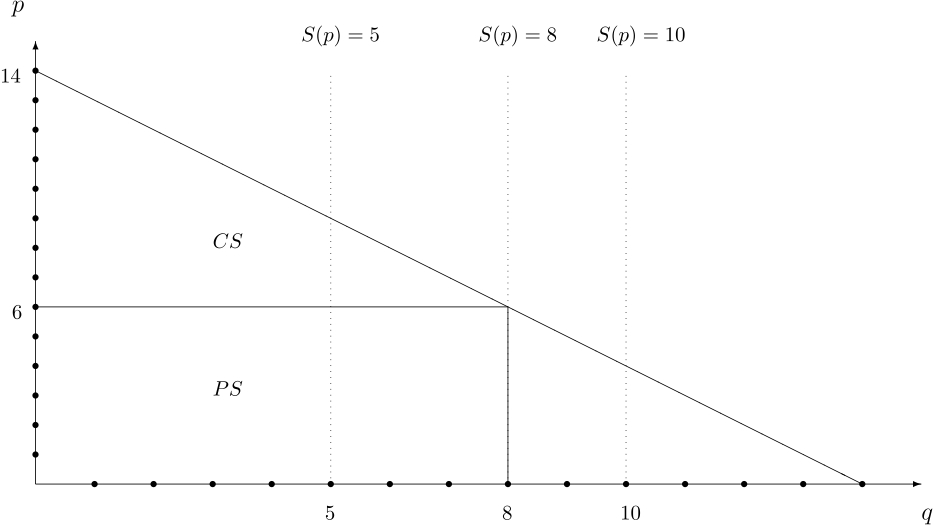

経済学で出る数学
ワークブックでじっくり攻める：問1.18
【解答1.18】
下図を元に計算する．

豊作貧乏か否かの問であるので比較は生産者余剰に着目する．
- $q=14-p$ に $q=8$ を代入すると $p=6$．
したがって，市場均衡は $p=6, q=8$ .
-
- 消費者余剰：$(14-6)\times 8 \div 2=32$万円
- 生産者余剰：$6\times 8=48$万円
- 総余剰：$32+48=80$万円
-
- 市場均衡：$p=4, q=10$
- 消費者余剰：$(14-4)\times 10 \div 2=50$万円
- 生産者余剰：$4\times 10=40$万円（供給量が8 → 10 に増えることで，生産者余剰が減る：豊作貧乏）
- 総余剰：$50+40=90$万円
-
- 市場均衡：$p=9, q=5$
- 消費者余剰：$(9-4)\times 5 \div 2=12.5$万円
- 生産者余剰：$5\times 9=45$万円（供給量が5 → 8 に増えることで，生産者余剰が増える：豊作リッチ）
- 総余剰：$12.5+45=57.5$万円
【解答1.18終わり】
解説も参照．
解答例一覧へ